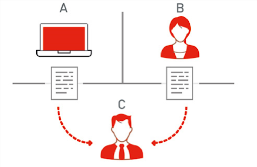

Historia, origen y desarrollo
El matemático e informático inglés Alan Turing es considerado el padre de la
Inteligencia Artificial. Habló de ella en el artículo “Computing Machinery and
Intelligence”, publicado en 1950. Es en este trabajo donde propone la famosa
prueba de Turing, ilustrada en la Figura , para determinar si un sistema
artificial es inteligente.
El ejercicio consiste en que un humano (C en la figura), conocido como el
interrogador, interacciona vía texto con un sistema al que puede hacer
preguntas. Si el humano no logra discernir cuándo su interlocutor es una máquina
(A en la figura), y cuándo otra persona (B en la figura), entonces el sistema
supera la prueba de Turing: es inteligente.

El término «inteligencia artificial» fue acuñado formalmente en 1956 durante la
Conferencia de Dartmouth por McCarthy, pero para entonces ya se había estado
trabajando en ello durante cinco años en los cuales se había propuesto muchas
definiciones distintas que en ningún caso habían logrado ser aceptadas
totalmente por la comunidad investigadora.
McCarthy quiso diferenciar la Inteligencia Artificial del concepto de
cibernética. McCarthy, quería enfatizar la conexión de la Inteligencia
Artificial con la lógica. Esta diferencia dio lugar a dos escuelas distintas
dentro del desarrollo de la IA.
En 1958 el psicólogo Frank Rosenblatt creó el Perceptrón, el que es considerado
“el primer ordenador capaz de pensar como el cerebro humano” llegando a ser
capaz de distinguir entre izquierda y derecha tras 50 intentos de aprendizaje

Desde las dos aproximaciones distintas a la Inteligencia Artificial por parte de
Wiener (basada en datos) y McCarthy (basada en la lógica), ha existido cierto
enfrentamiento: el enfoque simbólico-lógico o top-down y el enfoque basado en
datos, conexionista o bottom-up.

Durante la década de los 70 el interés por el mundo de la inteligencia
artificial disminuyó, pero en la década de los 80 empezó a crecer siendo en 1985
el gasto de las empresas en este sector de miles de millones de dólares.
Mientras tanto la comunidad científica seguía avanzando en las dos escuelas de
pensamiento. Uno de los hitos más importantes de la estrategia bottom-up y, en
particular, del conexionismo, fue el uso del algoritmo de backpropagation por
parte de David Rumelhart, Geoffrey Hinton y Ronald Williams en 1986.
Gracias al algoritmo de backpropagation es posible entrenar redes mucho más
complejas que el Perceptrón, con numerosas capas de neuronas ocultas, operando
entre las capas de entrada y salida y con capacidad, esta vez sí, de modelar
problemas complejos. Hoy en día el algoritmo de backpropagation es la base de la
gran mayoría de modelos de redes neuronales profundas.
Desde mediados de los años 90, hasta hoy en día, se ha producido un avance muy
significativo en las técnicas de aprendizaje estadístico por ordenador basadas
en datos (statistical machine learning), que pertenecen al enfoque bottom-up.
En los últimos años, con el éxito de los métodos de aprendizaje de deep learning
se ha producido un fuerte resurgir del acercamiento bottom-up y en particular
del conexionismo, dentro de la Inteligencia Artificial.

Volver a la página principal